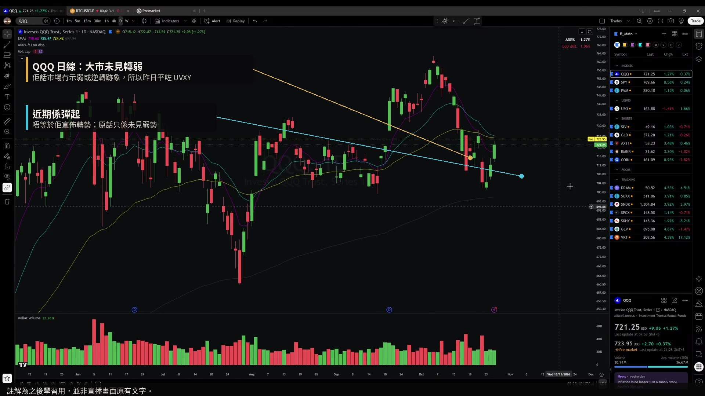
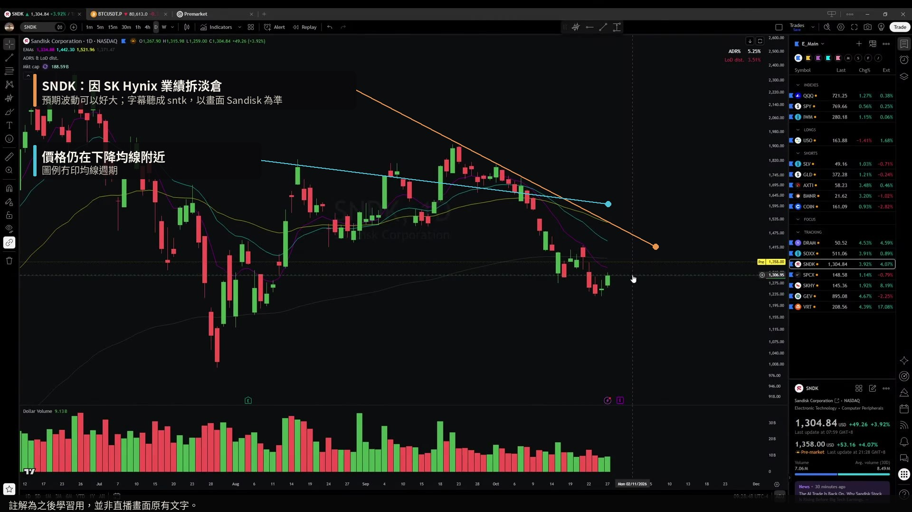
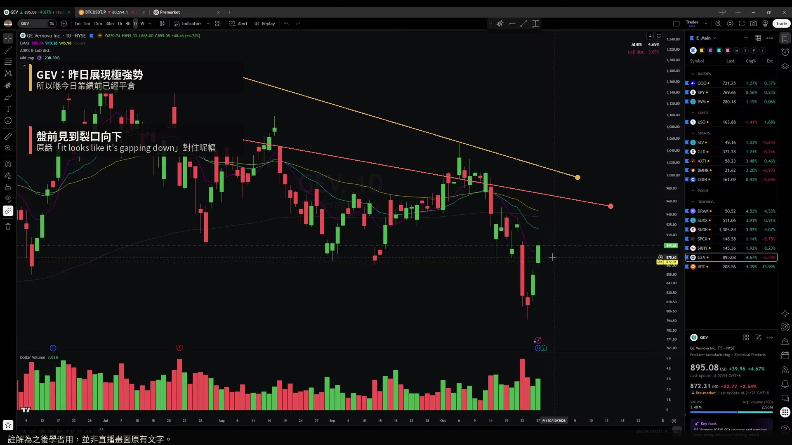

概要
開場先交代昨日同今日開市前拆走嘅倉
07:11 開始，佢話昨日平咗 UVXY，因為大市未見弱勢或者逆轉。跟住提到今日有 SK Hynix 業績，預期波動可以好大，而自己昨日淡倉已經偏重，所以把 SNDK 淡倉拆走。GEV 昨日全日展現極強勢，同樣喺今日業績前平咗。講完 GEV 嗰陣，畫面見到佢裂口向下。
字幕把 SNDK 聽成 sntk 或者 SK short；以畫面 Sandisk（SNDK）為準。圖例冇印均線週期。
圖一
QQQ 日線：大市未見轉弱或逆轉
直播 07:15

原話
So yesterday I sold my UVXY, as the market is just not showing any sign of weakness or reversal.
所以昨日我平咗 UVXY，因為大市就係未見任何弱勢或者逆轉跡象。
點樣讀
呢一步係先讀大市，再解釋點解平 UVXY。原話只係「未見弱勢或逆轉」，冇講轉勢已經成立。
畫面係 QQQ 日線，近期有彈起，但仍要同後面半導體、memory 一齊睇，唔好單獨當成買入訊號。
圖二
SNDK：因為 SK Hynix 業績而拆淡倉
直播 07:45

原話
And I realized today we got SK Hynix earnings, so I also took the SNDK short out, because I think there could be a very high volatility on the SK Hynix earnings, as I am pretty heavily shorted yesterday.
我又意識到今日有 SK Hynix 業績，所以亦把 SNDK 淡倉拆走，因為我覺得 SK Hynix 業績可以有好高波動，而我昨日淡倉已經偏重。
Whisper 把 SNDK 聽成 sntk；YouTube 字幕寫成 SK short out。畫面係 Sandisk Corporation（SNDK），以畫面為準。
點樣讀
拆倉理由係業績波動同整體淡倉已經偏重，唔係因為呢隻已經跌完。
畫面標題寫住 Sandisk Corporation，只當圖上文字。圖例冇印均線週期。
圖三
GEV：昨日極強，今日業績前已平；畫面裂口向下
直播 08:12

原話
And GEV as well — yesterday is also just showing immense strength throughout the day, so I just closed it before today's earnings with these. And it looks like it's gapping down.
GEV 都係。昨日全日都展現極強勢，所以我喺今日業績前，連同呢啲倉一齊平咗。而家睇落係裂口向下。
點樣讀
原話把 GEV 同前面業績風險放在同一段：昨日太強，先走，之後先見到裂口向下。
「gapping down」之後，對白即刻接到 VRT 裂口向上，見下一科。畫面標題 GE Vernova Inc. 只當圖上文字。
附註
注意事項
- 開場 03:12–07:10 係問候同網絡警告，冇獨立讀圖，唔單獨成科。
- 畫面睇唔到成交價、倉位大細或者損益，所以唔寫死呢啲數字。
免責聲明：呢份係教育拆解，唔係投資建議，亦唔好當作買賣指示。